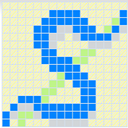

Salvus will provide mathematical software as a service, primarily using Sage. Salvus will support web browsers, application programs, and Android/iOS. Though Salvus will initially have very few features, it will have a distributed and fault tolerant design.
Try entering Sage code in the very preliminary demo.